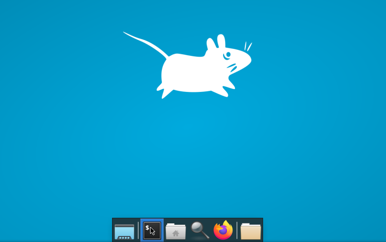
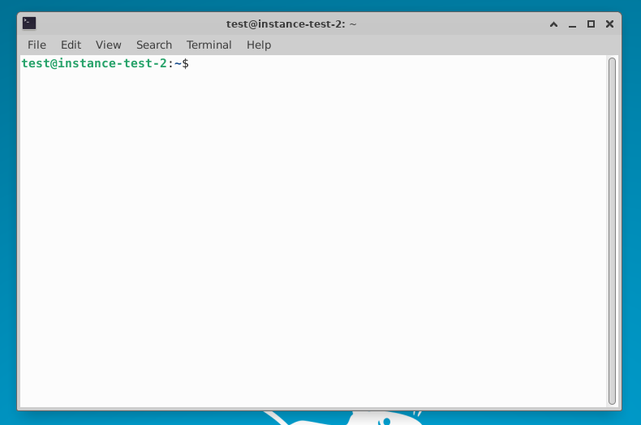

1. The terminal
The shell is commonly accessed using a terminal, which is a text-only display.
Click on the terminal app at the bottom of the desktop:

This will open a new window:

When the terminal is opened, the prompt $ shows that the shell is waiting for an input. This is where you will type
commands e.g.
$ date
will print the date and time according to the operating system.
IMPORTANT: do not type the prompt$when typing commands!
Only type the command that follows the prompt. This rule applies both in these lessons and in lessons from other sources.
After you type a command, you have to press the ENTER key to execute it.
The prompt is followed by a text cursor, a flashing (or solid black) cursor that indicates the position where whatever you type will
appear.
By default, most shells put some information on the user, the machine, and even the directory you are currently in. For example, in the
image above:
[test@instance-test-2:~]$
Don't worry about this, just make sure to type in only what is given after $ in your terminal.
2. The file system
The file system section of the operating systems organises our data into files, which hold information, and
directories (or folders), which contain files or other directories. Let’s have a look at how the file system is
organised.

The filesystem looks like an upside-down tree. The topmost directory is the root directory that holds everything else. We
refer to it using a slash character, /, on its own. Inside that directory are several other directories:
bin (this is not the rubbish bin, but where some built-in programs are stored), data (for miscellaneous data files), Users (where users’ personal directories are located), tmp (for temporary files that don’t need to be stored long-term).
We know that the directory /Users/nelle is stored inside /Users because /Users is the first part of its
name. Similarly, we know that /Users is stored inside the root directory / because its name begins with /.

Underneath /Users, we find one directory for each user with an account on the machine, Nelle and her colleagues imhotep
and larry.
Their files are stored in /Users/imhotep and in /Users/larry, respectively, while Nelle’s are in /Users
/nelle.
To navigate around the file system there are a few key commands:
Use pwd to print working directory
When using the terminal, our current location within the file system is called the working directory. Most commands tell
the operating system to perform the action wherever the user is, and so knowing where you are is very important.
$ pwd
/Users/nelle
Use ls to list the contents of the working directory
In the current directory you should see something like:
$ ls
Desktop Downloads Movies Pictures
Documents Library Music Public
Use cd to change directory
When you open a new terminal, you will be in your home directory. To navigate through directories, we use the
command cd followed by the path that we want to follow. If we only use cd, you will
return to your home directory.
$ cd Desktop
$ pwd
/Users/nelle/Desktop
$ cd
$ pwd
/Users/nelle
Note, if you mistype a command shell will inform you that it doesn't exist. For example:
$ kls
kls: command not found
3. Exploring a directory
At the start of each session you will be required to make a copy of the material we provide. This can be done in the shell using the
cp command:
$ cp -r practicals/session1 Desktop/.
where cp stands for copy, -r tells the shell to copy all files and folders,
practicals/session1 is the source location and Desktop/. is the destination.
To navigate to this new directory, first go to Desktop:
$ cd Desktop
Check the directories on the desktop:
$ ls
You should see a list, with one of them called session1. Now, go to that directory:
$ cd session1
We have now navigated from the home directory to a new current working directory.
Let’s take a look at the contents of session1 (our current directory) and the directory within it:
$ ls
that returns contents of current directory:
eddie-hpc-data/ shell-lesson-data/
We can also use ls to list the contents a different directory. Let's list the contents of shell-lesson-data, without
descending into the directory:
$ ls shell-lesson-data
that returns:
exercise-data/ north-pacific-gyre/
Now, let’s descend into the exercise-data directory in one step:
$ cd shell-lesson-data/exercise-data
Run pwd to check the directory you are currently in.
$ pwd
/Users/nelle/Desktop/session1/shell-lesson-data/exercise-data
List the contents of the directory:
$ ls
alkanes/ animal-counts/ creatures/ numbers.txt writing/
From our current directory, we can move into the north-pacific-gyre - a subdirectory of the parent directory shell-lesson-data, we first need to move a level up:
$ cd ..
.. is a special directory name meaning “the directory containing this one”, or more succinctly, the parent of the current directory.
The special directory .. doesn’t usually show up when we run ls. If we want to display it, we can add the -a option to ls:
$ ls -a
. .. exercise-data/ north-pacific-gyre/
The -a option stands for ‘show all’ (including hidden files); it forces ls to show us file and directory names that
begin with .
Now we can descend into the desired directory:
$ cd north-pacific-gyre
So far, when specifying directory names, or even a directory path (as above), we have been using relative paths. When you
use a relative path with a command like ls or cd, it tries to find that location from where we are right now,
rather than from the root of the file system.
However, it is possible to specify the absolute path to a directory by including its entire path from the root directory,
which is indicated by a leading slash. The leading / tells the computer to follow the path from the root of the file system, so
it always refers to exactly one directory, no matter where we are when we run the command.
This allows us to move to our shell-lesson-data directory from anywhere on the filesystem (including from inside exercise
-data). To find the absolute path we’re looking for, we can use pwd and then extract the piece we need to move to
shell-lesson-data.
$ pwd
/Users/nelle/Desktop/session1/shell-lesson-data/north-pacific-gyre
$ cd /Users/nelle/Desktop/session1/shell-lesson-data
Remember, that the commands are after the prompt $ while the output of the terminal starts on a new line and has no prompt symbol
in front.
The other way to indicate an absolute path, with respect to the current user’s home directory, is by using the tilde ~ character
at the start of a path. For example, if Nelle’s home directory is /Users/nelle, then ~/data is equivalent to
/Users/nelle/data.
$ pwd
/Users/nelle/Desktop/session1/shell-lesson-data
$ cd ~/Desktop/session1/shell-lesson-data/exercise-data
4. Tab completion
Knowing this much about files and directories, Nelle is ready to organize the files that the protein assay machine will create.
She created a directory called north-pacific-gyre (to remind herself where the data came from), which contains the data files
from the assay machine and her data processing scripts.
Each of her physical samples is labelled according to her lab’s convention with a unique ten-character ID, such as ‘NENE01729A’. This ID is
what she used in her collection log to record the location, time, depth, and other characteristics of the sample, so she decides to use it
within the filename of each data file. Since the output of the assay machine is plain text, she will call her files
NENE01729A.txt, NENE01812A.txt, and so on. All 1520 files will go into the same directory.
Now, in the current directory shell-lesson-data, Nelle can see what files she has using the command:
$ ls north-pacific-gyre/
This command is a lot to type, but she can let the shell do most of the work through what is called tab completion. If she types:
$ ls nor
and then presses Tab (the tab key on her keyboard), the shell automatically completes the directory name for her:
$ ls north-pacific-gyre/
Pressing Tab again does nothing, since there are multiple possibilities; pressing Tab twice brings up a list of all
the files.
If Nelle then types g and then presses Tab again, the shell will append ‘goo’ since all files that start with ‘g’
share the first three characters ‘goo’. Pressing Tab twice will then list all files that match the input:
$ ls north-pacific-gyre/g
$ ls north-pacific-gyre/goo
goodiff.sh goostats.sh
This is called tab completion, and we will see it in many other tools as we go on.
Questions
Question 1:
Starting from /Users/nelle/data, which of the following commands could Nelle use to navigate to her home directory?
cd .cd /cd /home/nellecd ../..cd ~cd homecd ~/data/..cdcd ..
Answer
- No:
. stands for the current directory.
- No:
/ stands for the root directory.
- No: Nelle’s home directory is
/Users/nelle.
- No: this command goes up two levels, i.e. ends in
/Users.
- ✅:
~ stands for the user’s home directory, in this case /Users/nelle.
- No: this command would navigate into a directory home in the current directory if it exists.
- ✅: unnecessarily complicated, but correct.
- ✅: shortcut to go back to the user’s home directory.
- ✅: goes up one level.
Question 2:
Using the filesystem diagram below, if pwd displays /Users/thing, what will ls ../backup display?
../backup: No such file or directory012-12-01 2013-01-08 2013-01-272012-12-01/ 2013-01-08/ 2013-01-27/original/ pnas_final/ pnas_sub/

Answer
- No: there is a directory backup in
/Users.
- No: this is the content of Users/thing/backup, but with
.., we asked for one level further up.
- No: see previous explanation.
- ✅:
../backup/ refers to /Users/backup/.
Question 3:
Using the filesystem diagram above, if pwd displays /Users/backup, and -r tells ls to display things
in reverse order, what command(s) will result in the following output:
pnas_sub/ pnas_final/ original/
ls pwdls -rls -r /Users/backup
Answer
- No:
pwd is not the name of a directory.
- ✅:
ls without directory argument lists files and directories in the current directory.
- ✅: uses the absolute path explicitly.
Key Points:
- The file system is responsible for managing information on the disk.
- Information is stored in files, which are stored in directories (folders).
- Directories can also store other directories, which then form a directory tree.
pwd prints the user’s current working directory.ls [path] prints a listing of a specific file or directory; ls on its own lists the current working directory.cd [path] changes the current working directory.- Most commands take options that begin with a single
-.
- Directory names in a path are separated with
/ on Unix (but \ on Windows).
/ on its own is the root directory of the whole file system.- An absolute path specifies a location from the root of the file system.
- A relative path specifies a location starting from the current location.
. on its own means ‘the current directory’; .. means ‘the directory above the current one’.